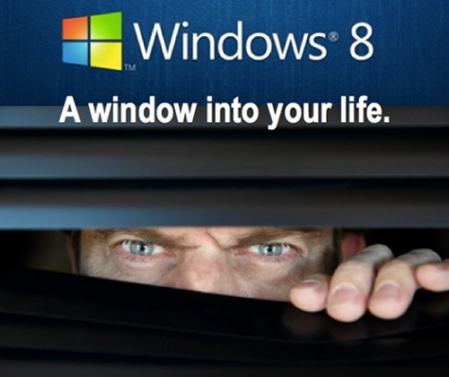

德國政府稱 Windows 8 有「重大危險性」

◎本文原載 Linux Pilot，原文章連結按此。
Windows 一直以來的程式碼，只有微軟的員工才能看到，究竟當中有沒有潛在的後門，就只有微軟的員工才知道。這問題一直困擾世界各國，特別是視美國為競爭對手的歐洲。最近有人就發現早在 NSA 事件洩密之前，德國政府已經就此提交了報告，結論是 Windows 8 有「重大危險性」。

德國最大入門網站之一的 ZEIT ONLINE，近日得到一份德國政府經濟部門在 2012 年初提交的報告，表示難以在聯邦政府和重要的資訊基建中引進 Windows 8，原因是該作業系統使用了新的 Trusted Computing 技術。報告指出藉此技術，NSA 等美國情報部門，將可在 Windows 8 中加入後門，在用戶不知不覺間自出自入，收集用戶的個人資料。
Trusted Computing 技術需要利用 TPM (Trusted Platform Module) 來運作，具體地說 TPM 就是一片決定軟體是否可以在 Windows 上執行的控制晶片。控制晶片既可容許一些微軟認為「優良」的軟體執行，也可以禁止認為是盜版或不適合的影片在 Windows 上播放。現時 TPM 可以容許用戶自行決定是否啟用，但 TPM 自 2.0 起，將會強制在 Windows 8 開機時啟動。
TPM 2.0 會產生的問題有三方面，第一是 TPM 2.0 會預設啟用的，用戶從此將失去是否決定啟用的選擇權。第二是用戶無法對其設定作出任何修改，第三是軟體執行的生殺大權完全在 Windows 8 的手上。如果美國法律容許 NSA 強制從微軟取得 TPM 的金鑰，便意味著 NSA 可以在 Windows 8 下秘密地執行任何程式，從此美國要收集他國的情報便易如反掌。只要在任何政府機構部署一台 Windows 8，不論在何時都可以從眼睛（鏡頭）和耳朵（麥克風）取得情報，而且不留痕跡。不過縱使如此，一般市民大概還是會繼續使用 Windows。畢竟要一改十多年來的習慣並不容易，但最終要擺脫微軟的控制，學習開源的 Linux 才是長遠的解決之道。